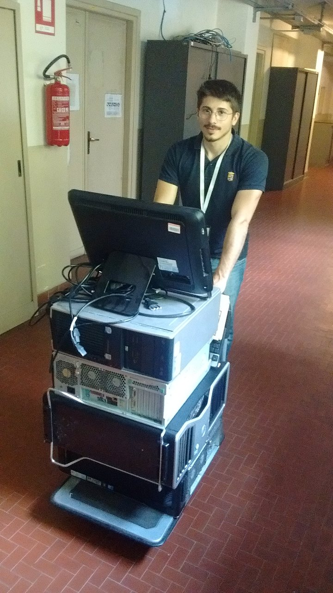
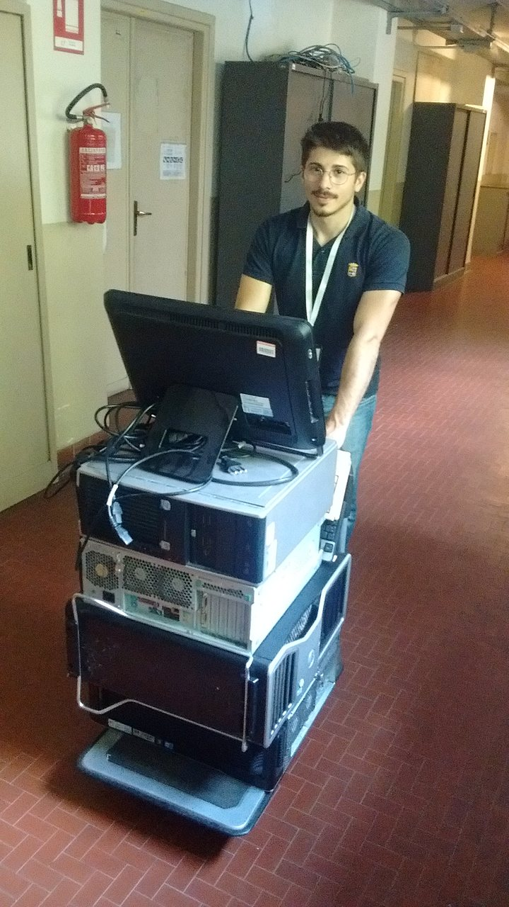

Oggi abbiamo recuperato un po' di materiale informatico dismesso dal DISAT (Dipartimento Scienza Applicata e Tecnologia): oltre ad alcuni schermi, mouse e tastiere, di cui abbiamo sempre necessità, ci sono state consegnate anche 4 workstation. La maggior parte di questo materiale era ancora funzionante, ma stava per essere tutto smaltito come RAEE (Rifiuti di Apparecchiature Elettriche ed Elettroniche) in quanto obsoleto.
Con "workstation" in generale si intende un computer di tipo desktop dall'elevata potenza computazionale, utilizzato per calcolo scientifico, CAD o applicazioni ingegneristiche.
I computer che abbiamo riparato fino ad oggi erano principalmente desktop per "uso ufficio", cioè adatti a creare documenti di testo e fogli di calcolo e alla navigazione su Internet; in sostanza delle "macchine da scrivere più evolute". Tuttavia sarebbe uno spreco adibire una workstation a simili compiti: basti pensare che finora abbiamo assemblato computer con 1 GiB di RAM ciascuno, mentre una delle workstation ha 32 GiB di RAM!
Un utilizzo più opportuno di tali macchine potrebbe essere adibirle a server LTSP: si tratta di un software che consente di installare un sistema operativo Linux su un server e usarlo da un computer remoto. Già durante la Sustainability Week avevamo dato una dimostrazione pratica di come funziona questo software. Ciò potrebbe servire, ad esempio, in una scuola che volesse aggiornare il proprio laboratorio di informatica: a noi risulta difficile fornire 25-30 computer identici, ma la scuola potrebbe averli già, sebbene troppo vecchi e lenti per utilizzarli direttamente: in quel caso basterà collegarli al server LTSP per trasformarli in "thin client" e sarà il server a svolgere tutto il "lavoro pesante" (esecuzione dei programmi, rendering dell'interfaccia grafica, etc...).